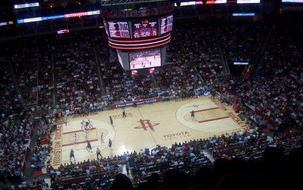

NRG Stadium, Houston, Feb. 5, 2017. Venue still.
Venue still
NRG Stadium — Texans home venue still
Wikimedia Commons venue stills. Not league game photography.
Texas desk — Texans, Astros, Rockets. Character and the score, not celebrity.
Wikimedia Commons venue stills. Not league game photography.
Quarterback C.J. Stroud has thrown eight touchdowns over his last two games, and Houston enters the night ninth in the NFL in scoring offense at 25.9 points per game — 28.4 excluding its output against the Bengals — and fourth in passing offense, according to the team's own preview. The Texans will be without receiver Marvin Harrison Jr. (hamstring), edge rusher Danielle Hunter (hamstring), tight end Brevin Jordan (foot/illness) and running back Woody Marks (concussion), all ruled out on the official injury report, while linebacker Jacob Hummel, cornerback Jaylin Smith and guard Wyatt Teller are questionable. Indianapolis is down five players of its own — tackles Jalen Travis and Bernhard Raimann, defensive tackle Jerry Tillery, tight end Will Mallory and cornerback Charvarius Ward are all out — with cornerback Sauce Gardner and long snapper Luke Rhodes questionable. It's the fifth Thursday-night meeting between the two teams since 2011.
Bayer, who spent time with the Cardinals organization in a senior baseball-operations role, becomes Flores's first significant addition to the Astros' front office since Flores was hired as general manager earlier this month, according to the team's own news page. Wilson was named bench coach the same day. The hires follow Houston's Nov. 12 announcement that Brad Ausmus, the longtime catcher and former Yankees bench coach, would return to the organization as its next manager.

Point guard Fred VanVleet dished six assists in the win, part of a November stretch in which he's averaging 14.0 points, 4.9 assists and 3.1 three-pointers per game, according to the team's own game notes. Forward Amen Thompson, who had missed Monday's loss to Miami with a knee injury, was cleared to play, led Houston in rebounds and scored nine of his 15 points in the first half; he's averaging 15.3 points, 7.6 rebounds and 3.0 assists per game this month. The Rockets don't play Thursday and host Denver Friday at Toyota Center at 10 p.m. ET.

Team and league pages for scores and schedules. Not ESPN opinion. Venue stills are Wikimedia Commons with credit on the page.